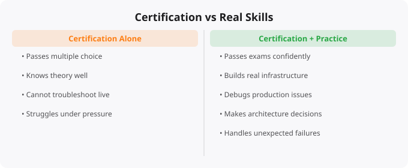

Why Certifications Alone Don't Make Cloud Engineers

Every year, hundreds of thousands of people pass cloud certifications. AWS Certified Solutions Architect Associate, Google Associate Cloud Engineer, Azure Administrator — these badges are earned by a massive number of people. And yet, companies continue to struggle to find cloud engineers who can actually do the job. How is that possible?
The answer reveals something important about how the technology industry actually works, and what it really takes to become a capable cloud engineer versus someone who has simply passed a test.
What Certifications Actually Test
Cloud certifications test your ability to remember and recognize information about cloud services and architectures. They present you with multiple choice questions about what a specific service does, which architecture pattern is appropriate for a described scenario, or what the correct way to configure a particular feature is. These are legitimate things to know. A Solutions Architect should understand the difference between S3 Standard and S3 Intelligent-Tiering. A cloud engineer should know when to use RDS versus DynamoDB.
But knowing what a service is called and knowing how to actually use it under real conditions are completely different skills. The certification tests the former. The job requires the latter. A certification question might ask which AWS service provides managed Kubernetes — the answer is EKS. You can memorize that in five minutes. The job might require you to set up an EKS cluster with proper networking and IAM configuration, deploy a containerized application with persistent storage, configure horizontal pod autoscaling, set up cluster autoscaling, integrate with a CI/CD pipeline, and debug a pod that keeps crashing. None of those things are tested on the certification.
The Problem With Exam-Focused Study
The certification industry has created a large number of resources — practice exams, dumps, cheat sheets — specifically designed to help you pass the test without necessarily understanding what you are learning. These resources teach you to recognize patterns in exam questions rather than to understand systems deeply. This creates a particularly insidious problem: you can feel very confident after passing a certification because you studied hard and answered 900 practice questions. But that confidence is not backed by real capability. When you sit down to actually configure a VPC or debug a failing Lambda function, you discover that you do not actually know what you are doing.
What Actually Builds Real Cloud Skills
Real cloud engineering skill comes from building things. Not tutorials where someone guides you through every step — actual projects where you decide what to build, figure out how to build it, encounter problems, debug them, and make it work. The free tiers offered by cloud providers are specifically designed to let you build real things without spending money. AWS Free Tier, GCP Free Tier, and Azure Free Account all give you meaningful resources to work with.
Here are the kinds of projects that actually build transferable cloud skills: deploy a web application with a database backend and configure it for high availability; set up a CI/CD pipeline that automatically deploys code changes; implement infrastructure as code with Terraform creating reproducible environments; configure a monitoring stack with alerts that notify you when something goes wrong; build a serverless API using Lambda or Cloud Functions; set up a data pipeline that processes and stores events in real time. When you build these projects, you will encounter real problems — networking issues, permission errors, cost surprises, deployment failures, performance problems. Solving these problems is where learning actually happens.
How Certifications Fit Into a Real Learning Path
This is not an argument against certifications. They have real value — they provide a structured curriculum to learn from, they are recognized by employers as a signal of baseline knowledge, and the process of studying for them teaches you about services and concepts you might not encounter in your initial projects. The key is the order and the mindset. Use certifications to guide your learning, not as the destination. Study the certification curriculum to understand what exists and why it matters. Then build projects that actually use what you learned. Then take the exam to validate your knowledge.
If you pass the exam but cannot build anything, you have learned to take tests. If you can build things but have no certification, you have skills but may struggle to get past initial resume screening. The combination is what actually moves your career forward.
What Hiring Managers Actually Want
Experienced hiring managers have seen enough people with certifications and no practical experience that they have learned to look beyond the badge. They ask about specific problems you have solved. They ask you to describe an architecture you designed and why you made certain choices. They give you scenarios and look for the kind of nuanced, trade-off-aware thinking that only comes from real experience.
The candidates who stand out are those who can say: I built a project where I deployed X, and when I ran into problem Y, I debugged it by doing Z, and I learned that... That kind of concrete, experience-backed answer is what creates confidence in a hiring manager. Your GitHub profile, your blog, your open source contributions, your side projects — these are the evidence that you have real skills, not just exam knowledge. Certifications open doors. Skills determine whether you walk through them successfully.
Key takeaways
- Certifications prove you can pass a test. Engineering proves you can solve a problem. They overlap less than recruiters want to believe.
- The candidates I've hired who only had certs — no projects, no scars, no broken things they'd fixed — usually couldn't get through a real production scenario.
- Use certs as a forcing function for structured learning, not as the goal. Then build something. Then break it. Then fix it. That's where the engineer is made.
- Don't apologise for not having certs if your work is strong. A great GitHub and one tough debugging story beats five badges on LinkedIn.
Practice and Building: The Path to Real Skill
Reading about technology and doing technology are fundamentally different activities. You can understand a concept intellectually without being able to apply it under real conditions. The gap between understanding and skill closes through deliberate practice — working on problems that are slightly beyond your current comfort level, where you have to stretch and figure things out. Comfortable practice does not build skill the same way that challenging practice does. Seek out projects and problems that require you to use what you have learned in new contexts, where you cannot just repeat what you have seen before but must think through a new application of familiar principles.
Document your learning publicly. Writing a blog post explaining what you learned, pushing a project to GitHub, or sharing a solution in a community forum creates accountability, consolidates understanding, and builds a visible portfolio. Many opportunities — jobs, collaborations, mentorships — come through the content people create and share. Start writing and building in public early, even when you feel like you do not know enough. The imposter syndrome is universal; do not let it delay the habit of sharing.
Disclaimer:
This article is for educational purposes only.
It does not guarantee job outcomes or certifications success.
Always rely on practical experience and official resources.
What Actually Happens After You Get Certified
I have talked with hundreds of people preparing for AWS certifications. A common story: spent 3 months studying for AWS SAA, passed with a good score, updated LinkedIn -- and then heard nothing from recruiters, or got interviews but could not answer practical questions. The certification opened no doors because it was not backed by hands-on experience.
The certification tests knowledge -- it asks whether you know what S3 is, what the difference between RDS and DynamoDB is, which service you would use for a given architecture. It does not test whether you have actually used these services, debugged a failing deployment, or understood why one architectural choice is better in a specific context. Those skills come only from doing.
Certification study teaches you:
- Service names and their documented use cases
- AWS pricing models in theory
- Which services integrate with which
- General architectural patterns from whitepapers
- Multiple choice answers
Real cloud experience teaches you:
- Why IAM permissions are not working (and how to debug)
- How to SSH into an instance when the security group is wrong
- What a VPC routing table looks like when traffic is not flowing
- How to read CloudWatch logs when an application crashes
- Why an EC2 instance is running out of disk at 3am and how to fix it
- How to read Terraform plan output before applying to production
- What happens to containers when nodes run out of memory in KubernetesThe Certification + Project Combination That Works
The engineers who get hired and thrive have both: the certification that proves they know the landscape, and projects that prove they can operate within it. The optimal sequence: study for certification alongside building a real project using the services you are learning. When you study EC2 for the exam, launch an actual EC2 instance and deploy something on it. When you study S3, create a bucket and write a script that uploads and retrieves files. When you study VPC, design and deploy a real network architecture.
This approach takes the same time as studying alone but produces dramatically better outcomes: you pass the exam with deeper understanding, you have real projects to discuss in interviews, and you have actually debugged real cloud issues which is what employers want to hear about.
Building the Portfolio That Gets Interviews
A cloud portfolio that genuinely impresses consists of: a containerised application deployed on Kubernetes (ideally on AWS EKS or Google GKE), Terraform code in a GitHub repo that provisions real infrastructure, a CI/CD pipeline (GitHub Actions or GitLab CI) that builds, tests, and deploys automatically, monitoring setup with meaningful dashboards, and a README that explains the architecture decisions and what you learned. Each project should have a "why I built it this way" section -- this demonstrates the thinking that certifications do not capture.
More Questions Answered
Should I skip certifications and just build projects?
No -- do both. Certifications give you a structured curriculum to ensure you know the breadth of a platform, signal validated knowledge to initial screeners, and provide a deadline that forces completion. Projects give you depth, debugging experience, and interview material. Both together is the right approach.
How many AWS certifications do I need?
One well-chosen certification plus strong practical skills beats three certifications with no hands-on experience. Start with AWS SAA-C03. If targeting DevOps roles, add AWS DevOps Professional. For security focus, AWS Security Specialty. Breadth comes from experience, not certificate accumulation.
What if I cannot afford AWS for practice?
Use the AWS Free Tier (12 months) which covers the key services for learning. Use LocalStack for local AWS simulation. Use Terraform with the free tier to practice IaC without incurring costs. Estimate and set spending alerts -- the entire certification study phase can be completed for under Rs. 2,000-3,000 on AWS if you stop and start resources appropriately.
Frequently Asked Questions
Is this topic relevant for Indian tech professionals?
Yes. India is one of the fastest-growing tech markets globally. These skills are in high demand across startups, MNCs, and product companies in Bangalore, Hyderabad, Pune, and Mumbai.
How do I stay updated on this topic?
Follow official documentation, tech blogs from practitioners, GitHub repositories, and communities like Dev.to, Hashnode, and Reddit. Avoid news that creates urgency without substance.
What resources does SRJahir Tech recommend?
Official documentation first. Then practical tutorials. Then build real projects. SRJahir Tech articles are written from real production experience — bookmark the series that matches your learning goal.
How long does it take to see results after learning?
Consistent daily practice for 3-6 months produces real, usable skills. The key is building projects, not just reading. Every article on SRJahir Tech includes practical examples you can implement today.
Is SRJahir Tech content free?
Yes. All articles on SRJahir Tech are completely free. No paywalls, no subscriptions. Quality technical education should be accessible to everyone, especially aspiring engineers in India.